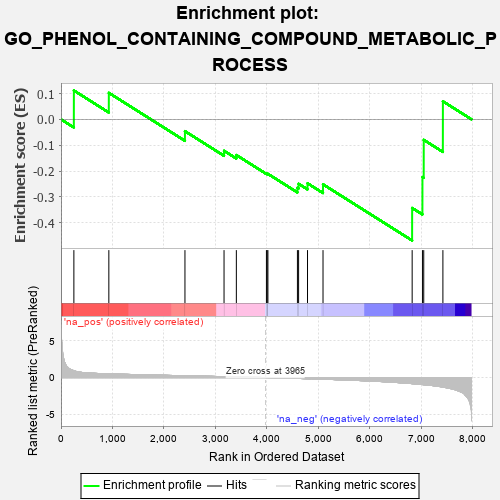
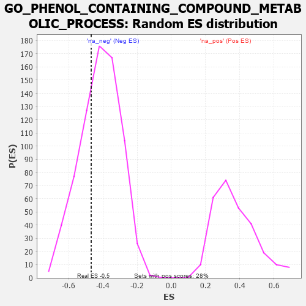

| | | Dataset | 7d |
| Phenotype | NoPhenotypeAvailable |
| Upregulated in class | na_neg |
| GeneSet | GO_PHENOL_CONTAINING_COMPOUND_METABOLIC_PROCESS |
| Enrichment Score (ES) | -0.46892005 |
| Normalized Enrichment Score (NES) | -1.1235644 |
| Nominal p-value | 0.30801105 |
| FDR q-value | 0.72874385 |
| FWER p-Value | 1.0 |
Table: GSEA Results Summary

Fig 1: Enrichment plot: GO_PHENOL_CONTAINING_COMPOUND_METABOLIC_PROCESS
Profile of the Running ES Score & Positions of GeneSet Members on the Rank Ordered List
| PROBE | GENE SYMBOL | GENE_TITLE | RANK IN GENE LIST | RANK METRIC SCORE | RUNNING ES | CORE ENRICHMENT | | 1 | INSM1 | | | 250 | 0.939 | 0.1116 | No |
| 2 | PDE1B | | | 929 | 0.500 | 0.1025 | No |
| 3 | BTBD9 | | | 2407 | 0.245 | -0.0458 | No |
| 4 | GCH1 | | | 3166 | 0.127 | -0.1217 | No |
| 5 | MED1 | | | 3405 | 0.089 | -0.1381 | No |
| 6 | VPS35 | | | 3989 | -0.006 | -0.2105 | No |
| 7 | GCNT4 | | | 4003 | -0.009 | -0.2108 | No |
| 8 | HDC | | | 4018 | -0.011 | -0.2109 | No |
| 9 | PNKD | | | 4591 | -0.116 | -0.2651 | No |
| 10 | GATA3 | | | 4614 | -0.120 | -0.2495 | No |
| 11 | MYO5A | | | 4787 | -0.155 | -0.2475 | No |
| 12 | DRD2 | | | 5088 | -0.221 | -0.2515 | No |
| 13 | GIPC1 | | | 6819 | -0.826 | -0.3430 | Yes |
| 14 | DDC | | | 7019 | -0.950 | -0.2234 | Yes |
| 15 | CTNS | | | 7044 | -0.965 | -0.0794 | Yes |
| 16 | TPH1 | | | 7416 | -1.286 | 0.0698 | Yes |
Table: GSEA details [plain text format]

Fig 2: GO_PHENOL_CONTAINING_COMPOUND_METABOLIC_PROCESS: Random ES distribution
Gene set null distribution of ES for GO_PHENOL_CONTAINING_COMPOUND_METABOLIC_PROCESS